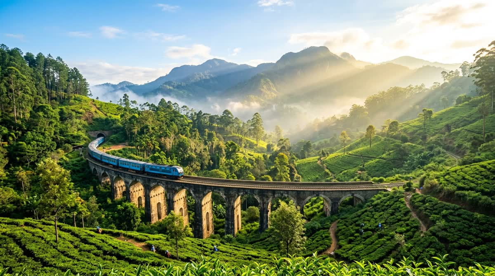

<meta charset="utf-8">
<title>MadeForSriLanka Photography</title>
<meta name="claude:viewport-fit-sides" content="cover">
<link rel="stylesheet" href="https://fonts.googleapis.com/css2?family=Onest:wght@400;500;600&display=swap">
<style>
/* Layout: photography and video guide. Principles, the shot recipe per page, crops (one photo shown in every website frame), treatment do/don't, video, permission and law, files, and a shot list for the crew. */
:root{
  --page:#F5F5EB; --card:#FFFFFF; --line:rgba(25,25,15,.1); --fg:#14140F; --mute:#6E6E64; --chip:#ECECE2; --lime:#BEFF50; --clay:#A4472A; --dont:#FBEDE7;
  --f:"Onest",system-ui,-apple-system,"Segoe UI",sans-serif;
}
@media (prefers-color-scheme: dark){:root:not([data-theme="light"]){--page:#121210;--card:#1C1C18;--line:rgba(245,245,235,.12);--fg:#F2F2E8;--mute:#A9A99C;--chip:#262620;--clay:#E0805F;--dont:#2A1E19;color-scheme:dark}}
:root[data-theme="dark"]{--page:#121210;--card:#1C1C18;--line:rgba(245,245,235,.12);--fg:#F2F2E8;--mute:#A9A99C;--chip:#262620;--clay:#E0805F;--dont:#2A1E19;color-scheme:dark}
*{box-sizing:border-box}
body{background:var(--page);color:var(--fg);font:400 16px/1.55 var(--f);-webkit-font-smoothing:antialiased}
h1,h2,h3{font-weight:500;letter-spacing:-.03em;line-height:1.04;margin:0;text-wrap:balance}
p{margin:0}
.wrap{max-width:1180px;margin:0 auto;padding-left:max(16px,env(safe-area-inset-left,0px));padding-right:max(16px,env(safe-area-inset-right,0px))}
header{padding-block:52px 0}
header h1{font-size:clamp(42px,5.6vw,80px);line-height:.95}
.lead{font-size:18px;color:var(--mute);max-width:64ch;margin-top:14px}
.jump{display:flex;flex-wrap:wrap;gap:8px;margin-top:22px}
.jump a{background:var(--card);border-radius:999px;padding:8px 14px;text-decoration:none;color:inherit;font-size:14.5px}
.jump a:hover{box-shadow:inset 0 0 0 1px var(--fg)}
section{padding-block:64px 0}
h2{font-size:clamp(28px,3.4vw,40px)}
.sub{color:var(--mute);margin-top:8px;max-width:64ch}
.panel{background:var(--card);border-radius:24px;padding:22px;min-width:0}
.mt{margin-top:22px}
.warn{background:var(--card);border-radius:24px;padding:18px 22px;margin-top:22px;display:grid;grid-template-columns:28px 1fr;gap:12px;align-items:start;box-shadow:inset 0 0 0 1.5px var(--clay)}
.warn svg{color:var(--clay);margin-top:2px}
.grid4{display:grid;gap:12px;margin-top:22px}
@media(min-width:760px){.grid4{grid-template-columns:1fr 1fr}}
@media(min-width:1100px){.grid4{grid-template-columns:repeat(4,1fr)}}
.pr{background:var(--card);border-radius:24px;padding:22px;display:grid;gap:8px;align-content:start}
.pr h3{font-size:22px;letter-spacing:-.02em}
.pr p{color:var(--mute);font-size:15px}
.recipe{display:grid;gap:12px;margin-top:22px}
@media(min-width:900px){.recipe{grid-template-columns:2fr 1fr 1fr 1.3fr}}
.rc{background:var(--card);border-radius:24px;padding:8px 8px 16px;display:grid;gap:10px;align-content:start}
.rc .fr{border-radius:18px;background:var(--chip);display:grid;place-items:center;color:var(--mute);font-size:13px;text-align:center;padding:10px}
.rc b{font-weight:500;font-size:17px;padding:0 8px}
.rc p{color:var(--mute);font-size:14.5px;padding:0 8px}
/* crop demo */
.crops{display:grid;gap:12px;margin-top:22px;grid-template-columns:repeat(2,minmax(0,1fr));align-items:end}
@media(min-width:900px){.crops{grid-template-columns:repeat(6,minmax(0,1fr))}}
.cr{background:var(--card);border-radius:20px;padding:8px 8px 12px;display:grid;gap:8px;min-width:0}
.cr .im{border-radius:14px;overflow:hidden;position:relative;background:#ddd;width:100%;max-width:100%}
.cr .im img{position:absolute;inset:0;width:100%;height:100%;object-fit:cover;display:block}
.cr .safe{position:absolute;inset:20% 20%;border:1.5px dashed rgba(255,255,255,.9);border-radius:8px}
.cr b{font-weight:500;font-size:14.5px;padding:0 4px}
.cr small{color:var(--mute);font-size:12.5px;padding:0 4px;font-variant-numeric:tabular-nums}
.ph{display:inline-block;background:var(--chip);border-radius:999px;padding:3px 10px;font-size:12.5px;color:var(--mute)}
/* do / don't */
.dd{display:grid;gap:12px;margin-top:22px}
@media(min-width:900px){.dd{grid-template-columns:1fr 1fr}}
.dd ul{list-style:none;padding:0;margin:12px 0 0;display:grid;gap:8px}
.dd li{display:grid;grid-template-columns:22px 1fr;gap:10px;font-size:15.5px;align-items:start}
.dd li i{width:20px;height:20px;border-radius:50%;display:grid;place-items:center;margin-top:2px}
.dd .y i{background:var(--lime);color:#14140F}
.dd .n i{box-shadow:inset 0 0 0 1.6px var(--clay);color:var(--clay)}
.dd h3{font-size:22px}
table{width:100%;border-collapse:collapse;font-size:15px}
td,th{text-align:left;padding:10px 12px 10px 0;border-bottom:1px solid var(--line);vertical-align:top}
th{font-weight:500;color:var(--mute);font-size:13px}
tr:last-child td{border-bottom:0}
.tw{overflow-x:auto}
.open{display:inline-block;background:var(--lime);color:#14140F;border-radius:999px;padding:2px 9px;font-size:12.5px;font-weight:500;margin-right:6px}
.check{list-style:none;padding:0;margin:0;display:grid;gap:8px}
.check li{display:grid;grid-template-columns:22px 1fr;gap:8px;font-size:15.5px}
.check li::before{content:"";width:16px;height:16px;border-radius:5px;box-shadow:inset 0 0 0 1.6px var(--fg);margin-top:4px}
footer{padding-block:64px 48px;color:var(--mute);font-size:14px}
:focus-visible{outline:2px solid var(--fg);outline-offset:3px}
</style>

<header class="wrap">
  <p style="color:var(--mute)">MadeForSriLanka design system · Fresh · photography and video</p>
  <h1>Photography and video</h1>
  <p class="lead">Real Sri Lanka, real people, honest light. Photos and video do most of the talking on our site, so they follow the same promise as our prices: what you see is what you get.</p>
  <nav class="jump" aria-label="Sections"><a href="#principles">Principles</a><a href="#recipe">Page recipe</a><a href="#crops">Crops</a><a href="#look">Look</a><a href="#video">Video</a><a href="#permission">Permission and law</a><a href="#files">Files</a><a href="#shots">Shot list</a></nav>
  <div class="warn"><svg width="20" height="20" viewBox="0 0 24 24" fill="none" stroke="currentColor" stroke-width="2.2" stroke-linecap="round" stroke-linejoin="round" aria-hidden="true"><circle cx="12" cy="12" r="9"/><path d="M12 8v5M12 16.5v.01"/></svg><p style="font-size:15.5px"><b style="font-weight:500">Now:</b> the photos in the mockups come from the current website and look AI-generated. They are placeholders only and must all be replaced with real photos before launch. The hero video's rights are also still open.</p></div>
</header>

<section class="wrap" id="principles">
  <h2>Four principles</h2>
  <div class="grid4">
    <div class="pr"><h3>Real</h3><p>Our own photos from Sri Lanka, or guests' photos with permission. No stock photos, no AI images, no other company's pictures.</p></div>
    <div class="pr"><h3>Moments with people</h3><p>Candid, not posed: the tea picker waving, the cook's hands, guests laughing in the jeep. Faces only with permission.</p></div>
    <div class="pr"><h3>Honest light</h3><p>Early morning and late afternoon light. Natural colours. No fake skies, no added sunsets, no heavy filters.</p></div>
    <div class="pr"><h3>True to the trip</h3><p>Show what guests really get: the real car, real rooms, real crowds at Nine Arch Bridge. A Raptor only where a Raptor is offered.</p></div>
  </div>
</section>

<section class="wrap" id="recipe">
  <h2>Recipe for every page</h2>
  <p class="sub">Each trip page, day trip and place uses the same mix, so pages feel full without being busy.</p>
  <div class="recipe">
    <div class="rc"><div class="fr" style="aspect-ratio:16/9">1 wide view<br>drone or landscape</div><b>1 wide</b><p>Where you are: the rock from above, the coast, the tea hills.</p></div>
    <div class="rc"><div class="fr" style="aspect-ratio:4/5">detail</div><b>Close detail</b><p>A hand, food, a texture, a ticket.</p></div>
    <div class="rc"><div class="fr" style="aspect-ratio:4/5">detail</div><b>Close detail</b><p>A second detail that tells the moment.</p></div>
    <div class="rc"><div class="fr" style="aspect-ratio:4/3">people moment</div><b>1 people moment</b><p>Guests or locals doing something, never staring at the camera.</p></div>
  </div>
  <p class="sub">Plus one short silent video clip (3–10 seconds) where it helps: the train, the jeep, the waves.</p>
</section>

<section class="wrap" id="crops">
  <h2>Crops</h2>
  <p class="sub">The same photo is cut into different shapes across the site. Keep the subject inside the middle area (dashed) so every crop still works. <span class="ph">Placeholder photo, shows the crops only</span></p>
  <div class="crops" id="cropgrid"></div>
</section>

<section class="wrap" id="look">
  <h2>The look</h2>
  <div class="dd">
    <div class="panel y"><h3>Do</h3><ul id="do"></ul></div>
    <div class="panel n"><h3>Don't</h3><ul id="dont"></ul></div>
  </div>
</section>

<section class="wrap" id="video">
  <h2>Video</h2>
  <div class="panel mt tw"><table><thead><tr><th>Where</th><th>Length</th><th>Rules</th></tr></thead><tbody>
    <tr><td>Home hero</td><td>6–10 s silent loop</td><td>Muted, plays inline, pause button, first frame as still. Phones on mobile data and "Reduce motion" get the still only. <span class="open">Open</span>the mockup uses a 21 s clip whose rights are not confirmed.</td></tr>
    <tr><td>Quiz and trip cards</td><td>3–5 s</td><td>Silent, one moment each, a still for slow connections</td></tr>
    <tr><td>Trip and landing pages</td><td>One clip up to 10 s</td><td>Near the top, never autoplay with sound</td></tr>
    <tr><td>Instagram, TikTok, guest videos</td><td>15–30 s</td><td>Vertical 9:16, captions burned in (people watch without sound), ends with "Plan your trip in 2 minutes"</td></tr>
    <tr><td>Long edits</td><td>Any</td><td>On YouTube or Instagram, linked from the site, not hosted by us</td></tr>
  </tbody></table>
  <p style="margin-top:12px;font-size:15px;color:var(--mute)">Site videos are hosted on a video service that sends the right size to each screen (for example Cloudflare Stream, Mux or Bunny; still to choose).</p></div>
</section>

<section class="wrap" id="permission">
  <h2>Permission and law</h2>
  <div class="panel mt tw"><table><thead><tr><th>Who or what</th><th>Rule</th></tr></thead><tbody>
    <tr><td>Guests</td><td>Ask on WhatsApp after the trip, per photo or video. Keep the chat as proof. They can withdraw at any time, and we then remove it (EU privacy law, GDPR).</td></tr>
    <tr><td>Children</td><td>Only with a parent's written yes. Prefer backs, hands, wide shots.</td></tr>
    <tr><td>Local people</td><td>Ask first, show them the photo, offer to send it. No photos of people in hard moments.</td></tr>
    <tr><td>Friends' videos and drone shots</td><td>Written permission from the person who filmed and edited, and from people who can be recognised. No credit needed (your decision).</td></tr>
    <tr><td>Drones</td><td>Only if flown legally: registered with and allowed by Sri Lanka's Civil Aviation Authority (CAASL), and never over restricted places such as airports, military sites or national parks without a permit. <span class="open">Open</span>check the existing drone footage.</td></tr>
    <tr><td>Religious sites</td><td>Respect the rules at each temple. Never pose with your back to a Buddha statue or touch statues for a photo.</td></tr>
    <tr><td>Wildlife</td><td>Shot from the jeep or boat at a safe distance. No feeding, no chasing, no animals kept or ridden for tourists.</td></tr>
    <tr><td>Drivers and crew</td><td>Their own yes before their photo goes on "Meet your driver" or the crew page.</td></tr>
  </tbody></table></div>
</section>

<section class="wrap" id="files">
  <h2>Files</h2>
  <div class="panel mt tw"><table><thead><tr><th>Use</th><th>Shape</th><th>Size to upload</th></tr></thead><tbody>
    <tr><td>Hero (laptop / phone)</td><td>16:8 / 4:5</td><td>2400 px wide</td></tr>
    <tr><td>Trip and day-trip cards</td><td>4:3</td><td>1200 px wide</td></tr>
    <tr><td>Vibe photos, moments</td><td>4:5 or 3:2</td><td>1600 px wide</td></tr>
    <tr><td>Video cards, stories, share card</td><td>9:16</td><td>1080 × 1920 px</td></tr>
    <tr><td>Link previews (WhatsApp, Facebook)</td><td>1.91:1</td><td>1200 × 630 px</td></tr>
    <tr><td>Crew and driver faces</td><td>1:1 or 4:3</td><td>800 px wide</td></tr>
  </tbody></table>
  <ul style="margin:14px 0 0;padding-left:20px;display:grid;gap:6px;font-size:15px">
    <li>Upload the best original; the website makes smaller WebP or AVIF copies for each screen.</li>
    <li>A whole page stays under about 2 MB on a phone, so cards load small copies and the hero only one.</li>
    <li>File names say place and moment: <code>ella-train-nine-arch-morning.jpg</code>.</li>
    <li>Every photo in the places library records who took it, the date, and the permission.</li>
    <li>Alt text describes the moment and place in one sentence: "Train crossing the Nine Arch Bridge near Ella in morning light."</li>
  </ul></div>
</section>

<section class="wrap" id="shots">
  <h2>Shot list for the crew</h2>
  <p class="sub">What to capture on the road, with phones, the drone and the Raptors. Tick it off per trip.</p>
  <div class="dd">
    <div class="panel"><h3 style="font-size:22px;margin-bottom:12px">Every place</h3><ul class="check">
      <li>One wide view (drone where legal, or from a high point)</li><li>Two details: food, hands, texture, signs</li><li>One people moment, with permission</li><li>One 3–5 s silent clip</li><li>Morning or late-afternoon light</li></ul></div>
    <div class="panel"><h3 style="font-size:22px;margin-bottom:12px">Brand and trust</h3><ul class="check">
      <li>The three partners together, and each with the cars</li><li>Each driver: friendly face photo, in daylight</li><li>Each car, outside and inside, clean, real</li><li>Kotiya's home: Elpitiya village, homestay, waterfalls</li><li>A real mid-trip change, filmed with the guests' yes</li></ul></div>
  </div>
</section>

<footer class="wrap">Source: brand and website decisions in the MadeForSriLanka interview notes and DESIGN.md (Fresh), 23 November 2026. Items marked Open are not decided yet.</footer>

<script>
(()=>{
const C=[["Hero, laptop","16/8","16:8"],["Hero, phone","4/5","4:5"],["Trip card","4/3","4:3"],["Vibe photo","3/2","3:2"],["Story, share card","9/16","9:16"],["Link preview","1.91/1","1.91:1"]];
document.getElementById("cropgrid").innerHTML=C.map(c=>`<div class="cr"><div class="im" style="aspect-ratio:${c[1]}"><span class="safe" aria-hidden="true"></span></div><b>${c[0]}</b><small>${c[2]}</small></div>`).join("");
const tick='<svg width="12" height="12" viewBox="0 0 24 24" fill="none" stroke="currentColor" stroke-width="3.2" stroke-linecap="round" stroke-linejoin="round" aria-hidden="true"><path d="M4 12l5 5L20 6"/></svg>',cross='<svg width="10" height="10" viewBox="0 0 24 24" fill="none" stroke="currentColor" stroke-width="3.2" stroke-linecap="round" aria-hidden="true"><path d="M6 6l12 12M18 6L6 18"/></svg>';
const DO=["Shoot in the first two hours after sunrise and the last two before sunset","Keep colours natural: green tea, red earth, blue-grey sea","Light edits only: straighten, a little brightness and contrast","Leave space for the crop: subject in the middle area","Put text next to photos, not on them; if text must sit on a photo, use a dark ink overlay so it stays readable","Show real numbers of people at busy places"];
const DONT=["AI-made or stock photos, even 'just for now' on the live site","Fake skies, added suns, over-saturated 'postcard' colours","Heavy filters or a different look on every photo","People posing for the camera, or faces without permission","Wildlife too close, baited or held for tourists","A cartoon Kotiya beside a real leopard photo"];
document.getElementById("do").innerHTML=DO.map(t=>`<li><i>${tick}</i><span>${t}</span></li>`).join("");
document.getElementById("dont").innerHTML=DONT.map(t=>`<li><i>${cross}</i><span>${t}</span></li>`).join("");
})();
</script>
